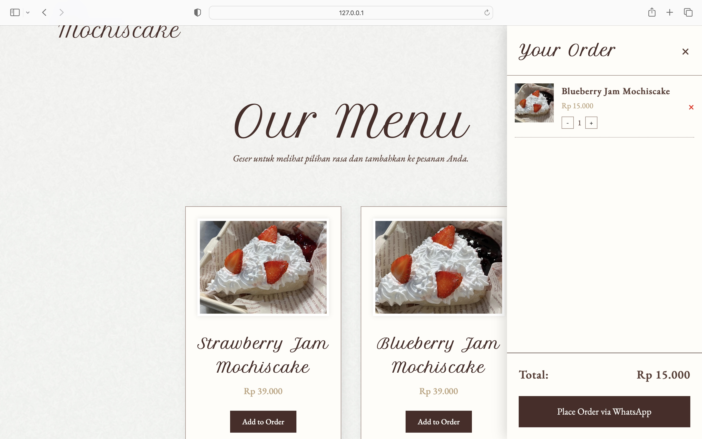

Mochiscake Website
Membangun website e-commerce sederhana yang fungsional dan konsisten dengan identitas merek Mochiscake.

Ringkasan Proyek
Sebagai CTO untuk Mata kuliah validasi pasar (market validation) ini, saya memimpin pengembangan kehadiran digital untuk bisnis "Mochiscake". Tanggung jawab utama saya adalah merancang, membuat kode, dan meluncurkan website e-commerce fungsional dari awal (from scratch). Website ini dibangun sepenuhnya menggunakan HTML dan CSS untuk menciptakan etalase digital yang menarik. Selain pengembangan web, saya juga mengelola strategi dan eksekusi media sosial untuk mendukung penjualan dan mengukur respons pasar.
Fitur dan Manfaat Website
Fitur Utama Website:
- Halaman Beranda: Menampilkan banner produk unggulan dan promosi.
- Katalog Produk: Daftar produk mochi cake lengkap dengan gambar, deskripsi, dan harga.
- Tentang Kami: Informasi singkat tentang brand dan nilai bisnis kelompok.
- Kontak & Pemesanan: Menyediakan tautan ke WhatsApp dan media sosial untuk memudahkan pelanggan melakukan pemesanan.
Manfaat & Kelebihan Website:
- Menyediakan informasi produk secara terpusat dan mudah diakses.
- Meningkatkan profesionalitas dan kredibilitas bisnis.
- Mempermudah pelanggan menemukan dan memesan produk.
- Mendukung kegiatan promosi tanpa bergantung sepenuhnya pada media sosial.



Lihat Website-nya
Kunjungi website live Mochiscake yang dibuat untuk proyek validasi pasar ini.
Kunjungi Website Mochiscake